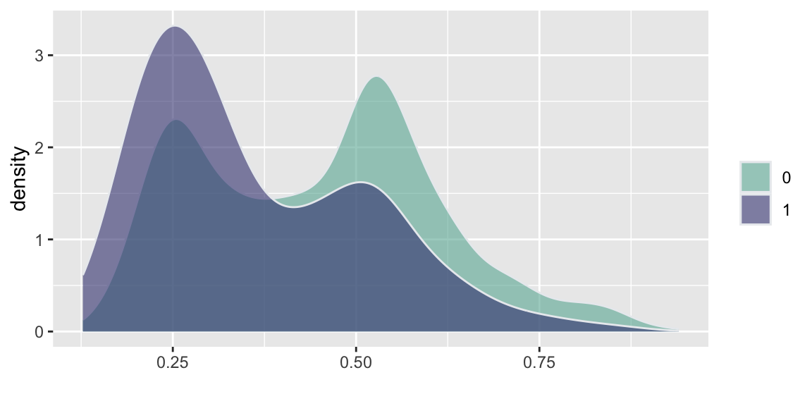
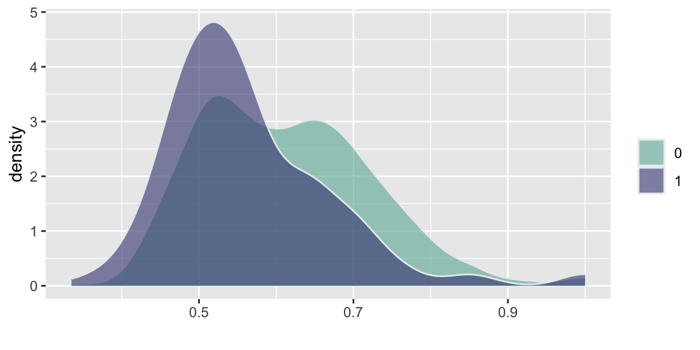
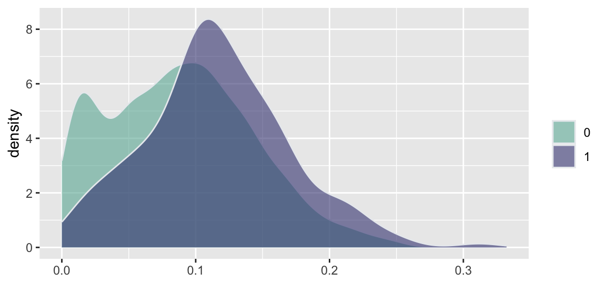
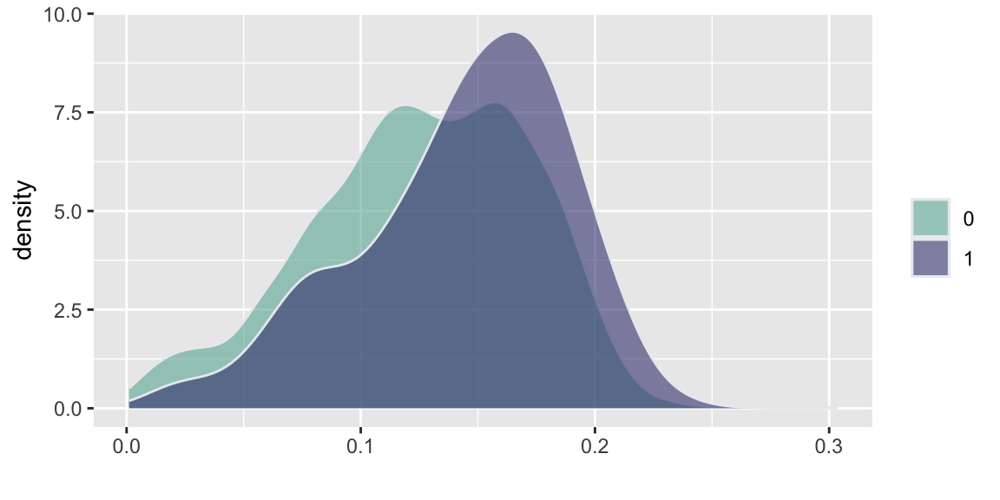
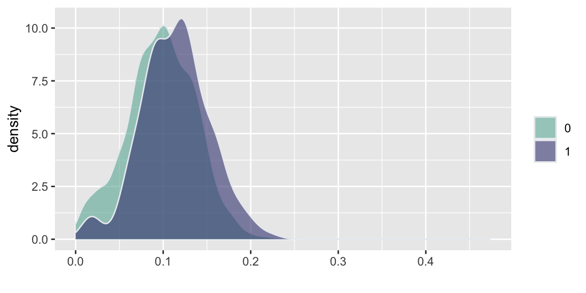
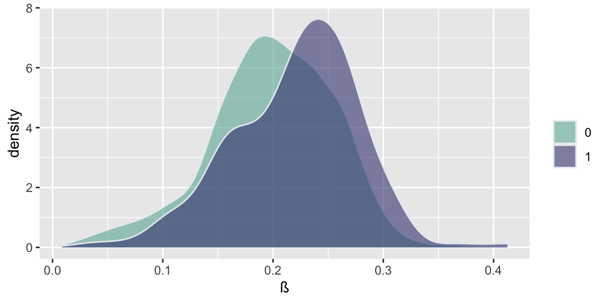

Florence Nightingale (1820 - 1910) was a heroine of the Crimean War, Patron Saint of Nurses, admirer of Quetelet, and champion of the statistical, study of society. She can be called the mother of observational studies. To her every piece of legislation was an experiment in the laboratory of society deserving study and demanding evaluation. Nightingale recognized the importance of collecting accurate and reliable data to understand healthcare outcomes. She developed standardized methods for collecting data on hospital admissions, deaths, causes of death, and other relevant factors. This systematic data collection allowed for more rigorous and reliable analysis of healthcare practices and their impact on patient outcomes. During the Crimean War (1853-1856), she collected and analyzed data on mortality rates among soldiers. She created statistical diagrams, such as the famous polar area diagram or “coxcomb,” to illustrate the causes of mortality. These visual representations helped to convey complex information in a clear and understandable way. Nightingale’s observations and statistical analyses led her to emphasize the importance of sanitation and hygiene in healthcare settings. She advocated for improvements in cleanliness, ventilation, and sanitation in hospitals, recognizing the impact of these factors on the health and well-being of patients. Beyond the battlefield, Nightingale continued her work in public health. She used statistical evidence to advocate for healthcare reforms and improvements in public health infrastructure. Her efforts played a crucial role in shaping public health policies and practices.
The work of Nightingale would be nowadays called an observational study. An observational study is a research design where researchers observe and collect data on existing groups of people or phenomena without intervening or manipulating any variables. Unlike randomized controlled trials, researchers do not assign participants to different groups and do not directly influence the outcome.
George Washington (1732-1799) on the other hand has made an enormous fortune in farming and one of the distinguishing features of his farming practices was the use of what we nowadays call a controlled experiment. He was deeply interested in improving agricultural techniques and conducted numerous experiments at his Mount Vernon estate. One of his most notable experiments involved dividing his land into plots and testing different crop rotations and fertilization methods. Washington recognized the importance of sustainable agriculture and the detrimental effects of monoculture (growing the same crop year after year) on soil fertility. He observed how tobacco, his primary cash crop at the time, depleted the soil nutrients, leading to diminishing yields. To address this issue and improve the long-term health of his land, he began experimenting with crop rotation and soil management techniques.
Washington divided his land into several plots, each receiving different treatments. He experimented with various crop rotations, including wheat-fallow, wheat-rye-fallow, and corn-wheat-fallow. These rotations aimed to prevent soil depletion and promote its natural restoration by planting nitrogen-fixing crops like rye and clover. He also tested different fertilizer applications on various plots. He used manure, compost, and even imported materials like gypsum and marl to improve soil fertility and crop yields.
Washington meticulously documented his experiments in his agricultural diaries. He recorded planting dates, yields, weather conditions, and observations on crop growth and soil health. This meticulous record-keeping allowed him to analyze the effectiveness of different treatments and compare their impact on crop yields and soil quality.
Washington’s experiments yielded valuable insights into sustainable agricultural practices. He discovered that crop rotation and fertilization improved soil health and increased crop yields over time. He abandoned tobacco as his primary crop and shifted towards wheat, which was less soil-depleting and offered a more stable income source.
The historic trades staff at Mount Vernon have recreated Washington’s experiment at the Pioneer Farm, using the same plot layout, crops, and fertilization methods described in his diaries. This allows visitors to learn about his innovative farming techniques and their impact on the land. Figure 8.1 shows the plot layout at the Pioneer Farm.
Figure 8.1: Plot layout at the Mount Vernon’s Pioneer Farm
George Washington’s commitment to experimentation and innovation made him a pioneer in American agriculture. His plot-based experiments demonstrated the effectiveness of crop rotation and soil management in promoting sustainable farming practices. His work continues to inspire farmers today and serves as a valuable resource for understanding agricultural history and best practices.
Later, at the turn of the 20th century, Ronald Fisher (1890 - 1962) developed the theory of experimental design which allowed for controlled experiments, known as randomized controlled trials (RCT). Fisher’s work laid the foundation for modern experimental design and analysis, providing a rigorous statistical framework for conducting randomized controlled trials. His contributions to experimental design and ANOVA were crucial in establishing the importance of randomized trials in research. He emphasized the importance of randomization and control groups in experimental design, recognizing their crucial role in establishing causal relationships.
The modern randomized controlled trial (RCT) in medicine is most often attributed to Sir Austin Bradford Hill. In 1948, Hill published a landmark paper titled “Streptomycin Treatment of Pulmonary Tuberculosis” in the British Medical Journal, which described the first fully randomized, double-blind clinical trial. This study is considered a turning point in the history of medical research and established the RCT as the gold standard for evaluating the effectiveness of medical treatments.
Randomized trials and observational studies are two distinct approaches to gathering and analyzing data in research studies. Here’s a breakdown of their key differences:
Randomized Trials:
Definition: Participants are randomly assigned to different groups, with one group receiving the intervention being studied and the other group receiving a control intervention or placebo.
Purpose: To determine whether the intervention causes the observed outcome by controlling for other factors that might influence the results.
Strengths: High internal validity, strong causal inference due to randomization, allows for isolating the effect of the intervention.
Weaknesses: Can be expensive and time-consuming to conduct, may not be ethical or feasible for all interventions, may not be generalizable to real-world settings.
Observational Data:
Definition: Data is collected on existing groups of people without any intervention being implemented. Researchers observe and analyze the data to identify relationships between variables.
Purpose: To explore potential associations between variables, generate hypotheses for further research, and investigate the natural course of a disease or phenomenon.
Strengths: Often less expensive and time-consuming than randomized trials, can provide insights into real-world settings, can investigate rare diseases or interventions that are not ethically feasible to test in randomized trials.
If you happen to have a choice between randomized trials and observational data (often you do not have that choice), which one should you choose? Here are a few things to consider:
Research question: If the research question aims to establish causation, a randomized trial is generally preferred. However, if the goal is to explore associations or generate hypotheses, observational data may be sufficient.
Available resources: Randomized trials require significant resources, while observational studies can be less expensive and time-consuming.
Ethical considerations: Randomizing individuals to certain interventions may be unethical, making observational data the only option in such cases.
Generalizability: Randomized trials often involve carefully controlled environments, which may limit their generalizability to real-world settings. Observational data can provide insights into how interventions work in real-world situations.
Ultimately, both randomized trials and observational data play crucial roles in research. Combining these two approaches can provide a more comprehensive understanding of the relationship between interventions and outcomes.
Rothmstead t-rations split/pop designs
Example 8.1 (Russian Election Fraud: A Field Experiment)Enikolopov et al. (2013) show how a field experiment can be used to estimate electoral fraud in Russian parliamentary elections held on December 4, 2011. They randomly assigned independent observers to 156 of 3,164 polling stations in the city of Moscow. The observers were trained by the nongovernmental organization Citizen Observer. The authors compared the vote shares of the incumbent United Russia party at polling stations with and without observers. They found that the presence of observers decreased the reported vote share of United Russia by almost 11 percentage points. This suggests that the extent of the fraud was sufficient to have changed the outcome of the elections.
d =read.csv("../../data//PNAS_data_2011.csv")d %>%ggplot( aes(x=er_share, fill=as.factor(s))) +geom_density(alpha=0.6,color="#e9ecef") +labs(fill="") +xlab("")+scale_fill_manual(values=c("#69b3a2", "#404080")) d %>%ggplot( aes(x=turnout_share, fill=as.factor(s))) +geom_density(alpha=0.6,color="#e9ecef")+labs(fill="") +xlab("")+scale_fill_manual(values=c("#69b3a2", "#404080")) d %>%ggplot( aes(x=apple_share, fill=as.factor(s))) +geom_density(alpha=0.6,color="#e9ecef")+labs(fill="") +xlab("")+scale_fill_manual(values=c("#69b3a2", "#404080")) d %>%ggplot( aes(x=sr_share, fill=as.factor(s))) +geom_density(alpha=0.6,color="#e9ecef")+labs(fill="") +xlab("")+scale_fill_manual(values=c("#69b3a2", "#404080")) d %>%ggplot( aes(x=ldpr_share, fill=as.factor(s))) +geom_density(alpha=0.6,color="#e9ecef")+labs(fill="") +xlab("")+scale_fill_manual(values=c("#69b3a2", "#404080")) d %>%ggplot( aes(x=com_share, fill=as.factor(s))) +geom_density(alpha=0.6,color="#e9ecef")+labs(fill="") +xlab("ß")+scale_fill_manual(values=c("#69b3a2", "#404080"))

(a) United Russia Share

(b) Turnout Share

(c) Yabloko Share

(d) Just Russia Share

(e) LDPR Share

(f) Communists Share
Figure 8.2: Histogram comparison of the share of votes received by different parties and the share of those eligible voters who actually voted (turnout)
Figure 8.3: Bar plot comparison of the share of votes received by different parties and the share of those eligible voters who actually voted (turnout)
Figure 8.2 and Figure 8.3 show the the results of the experiments and plots histograms of the vote shares. The first histogram compares the share of the ruling United Russia party at the poll stations without observers (treatment = 0) and with. On average United Russia vote share is decreased by 11 percent when observers were present. The calculations made by Enikolopov et al. (2013) showed that this amount of manipulation was enough to preserve the majority of the United Russia in the parament, it would have lost it without manipulations. While “adding” votes for UR, the results indicate that all other parties were hurt by electoral fraud. The Liberal Democratic Party of Russia (LDPR) was hart the least and is believed to be the most loyal to the ruling party.
Example 8.2 (Indian Pollution)
Example 8.3 (Newfood) Goal of Experiment
A six month market test has been performed on the Newfood product. A breakfast cereal.
Build a multiple regression model that gives us good sales forecasts.
This dataset is the outcome of a controlled experiment in which the values of the independent variables which affect sales are chosen by the analyst.
Analyses the factors which contribute to sales of a new breakfast cereal. Quantify the effects of business decisions such as choice of advertising level, location in store and pricing.
variable
description
sales
new cereal sales
price
price
adv
low or high advertising (\(0\) or \(1\))
locat
bread or breakfast section (\(0\) or \(1\))
inc
neighborhood income
svol
size of store
What happens when you regress sales on price, adv, locat?
Run the “kitchen-sink” regression. Perform Diagnostic checks.
Which variables should we transform?
Run the new model. Perform diagnostics and variable selection.
What’s the largest cooks distance?
Provide a summary of coefficients and statistical significance
Predict sales when \(\mathrm{price} = 30, \mathrm{adv = 1} , \mathrm{income = 8}\) and \(\mathrm{svol} = 34\). What happens when you predict at the median values of the characteristics?
Remember: correlations are not \(\beta\)’s!! Total sales volume is negatively correlated to advertising Income is negatively correlated with advertising as well. How is the negative correlation apt to affect the advertising effects?
Exponentiate-back to find \(\text{sales} = e^{5.1739} = 176.60\).
8.1 The Question of Causation
Randomized controlled trials (RCTs) and field experiments are considered the gold standard for establishing causation because they allow researchers to isolate the effect of a specific intervention or treatment from other confounding factors. The main principle of RCTs and field experiments is randomization, which ensures that the treatment and control groups are similar in all respects except for the treatment. This allows researchers to attribute any differences in outcomes between the two groups to the treatment, rather than to other factors. Randomization helps to control for confounding variables, which are factors that are associated with both the treatment and the outcome variable. By randomly assigning participants to groups, researchers can ensure that any confounding variables are evenly distributed between the groups. The control group serves as a baseline for comparison. It is a group that is not exposed to the treatment or intervention being studied. By comparing the outcomes of the treatment group and the control group, researchers can isolate the effect of the treatment. Any differences in the outcomes between the two groups can be attributed to the treatment, rather than to other factors.
For many years, the main area of applications of randomized trials were medicine and agriculture. In medicine, randomized trials are used to test the effectiveness of new drugs and treatments. In agriculture, randomized trials are used to test the effectiveness of new fertilizers, pesticides, and other agricultural inputs. However, with the rise of internet, randomized trials have become increasingly popular for testing the effectiveness of online interventions, such as email campaigns, website designs, and social media ads. However, then applied to user experience and marketing, randomized trials are often called A/B tests. The idea of A/B testing is the same: randomly assign users to different versions of a website or an email campaign and compare the outcomes. However, the level or “rigor” of designing the experiment is often lower than in medicine or agriculture. There are less strict rules about ethics, randomization, sample size, and statistical analysis. For example, randomization sometimes completely ignored in A/B testing. Instead of assigning users randomly to groups, they are divided into groups based on factors like time of day, location, or browsing history. This can introduce bias into the results, as the groups may not be comparable. As a result, A/B testing is cheap and quick to conduct, as it can be done online without the need for IRB approval or recruitment of participants. Participants most of the times do not even know that they are participating in an A/B experiment. Futhermore, in A/B testing the primarily focused on measuring the comparative performance of variations without necessarily establishing a causal relationship. It answers questions like, “Which version of our web page leads to more clicks?”
Yet another area where RCTs are becoming popular are the economic studies. For example, randomized trials are used to test the effectiveness of educational interventions, such as tutoring programs and online courses. In recent years, randomized trials have been used to study a wide range of other phenomena, including education, economics, and public policy.
While RCTs and field experiments are powerful tools for establishing causation, they are not always feasible or ethical. In some cases, observational studies may be the best way to study a particular phenomenon. However, even in observational studies, researchers can use techniques such as matching and instrumental variables to try to control for confounding variables. It is important to remember that even RCTs and field experiments cannot definitively prove causation. However, they provide the strongest evidence possible for a causal relationship between a treatment or intervention and an outcome.
Enikolopov, Ruben, Vasily Korovkin, Maria Petrova, Konstantin Sonin, and Alexei Zakharov. 2013. “Field Experiment Estimate of Electoral Fraud in Russian Parliamentary Elections.”Proceedings of the National Academy of Sciences 110 (2): 448–52.